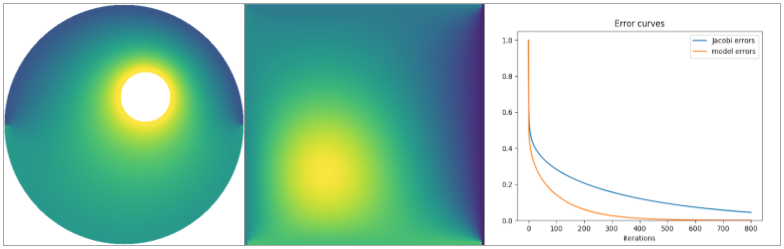
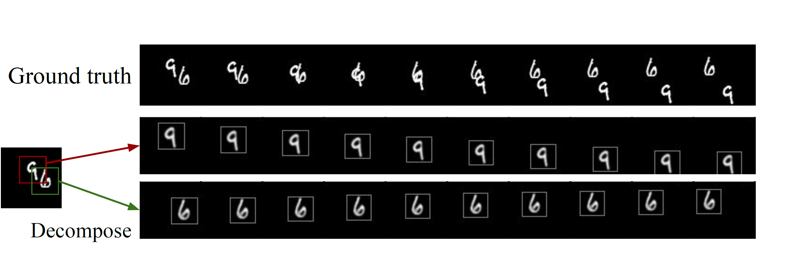
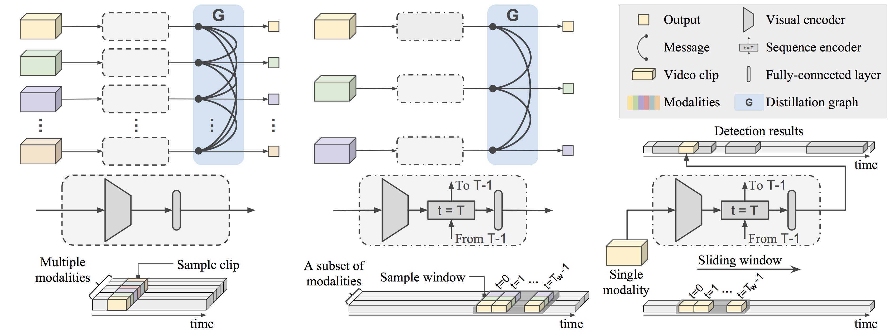
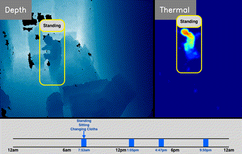
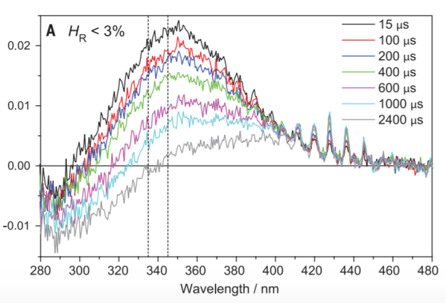

Jun-Ting (Tim) Hsieh
M.S. Candidate. Stanford University
junting [at] stanford [dot] edu
Github /
Google scholar /
CV
M.S. Candidate. Stanford University
junting [at] stanford [dot] edu
Github /
Google scholar /
CV
I am an M.S. student in the Computer Science department at Stanford University. I am working in the Stanford Vision and Learning Lab (SVL), advised by Prof. Fei-Fei Li and Juan Carlos Niebles. I also work in the Ermon Group, advised by Prof. Stefano Ermon.
My research interest lies in Computer Vision and Machine Learning. I have worked on projects in various topics, including Monte Carlo methods, video understanding and prediction, and multi-modal learning. I really enjoy applying machine learning to real-world problems. Recently, I worked on a project to learn an iterative PDE solver with convergence guarantees. I also work on using computer vision to improve healthcare. In particular, I am a member of the Partnership in AI-Assisted Care (PAC) working on improving senior's independent living and health monitoring.
I am also very interested in natural sciences. My first scientific research experience was with Prof. Jr-Min Lin on measuring the reaction rates of chemicals related to atmospheric ozone, which was later published in Science, 2015. Even though I've dived into Computer Science since then, I continue to take classes in physics, such as quantum mechanics and information.
Stanford University
Sep. 2017 - Present
M.S. in Computer Science
Stanford University
Sep. 2013 - Jun. 2017
B.S. in Computer Science
Terman Award Winner, University Distinction

Learning Neural PDE Solvers with Convergence Guarantees
New!
Jun-Ting Hsieh, Shengjia Zhao, Stephan Eismann, Lucia Mirabella, Stefano Ermon
In submission to International Conference on Learning Representations (ICLR), 2019
Paper

Learning to Decompose and Disentangle Representations for Video Prediction
New!
Jun-Ting Hsieh, Bingbin Liu, De-An Huang, Li Fei-Fei, Juan Carlos Niebles
Neural Information Processing Systems (NIPS), 2018
Paper
Code

Graph Distillation for Action Detection with Privileged Information
Zelun Luo, Jun-Ting Hsieh, Lu Jiang, Juan Carlos Niebles, Li Fei-Fei
European Conference on Computer Vision (ECCV), 2018
Paper
Project
Poster

Computer Vision-based Descriptive Analytics of Seniors' Daily Activities for Long-term Health Monitoring
Jun-Ting Hsieh*, Zelun Luo*, Niranjan Balachandar, Serena Yeung, Guido Pusiol, Jay Luxenberg, Grace Li, Li-Jia Li, N. Lance Downing, Arnold Milstein, Li Fei-Fei
Machine Learning for Healthcare (MLHC), 2018
Paper
Poster

Direct kinetic measurement of the reaction of the simplest Criegee intermediate with water vapor
Wen Chao, Jun-Ting Hsieh, Chun-Hung Chang, Jim Jr-Min Lin
Science, 2015. Vol. 347, Issue 6223, pp. 751-754
Paper